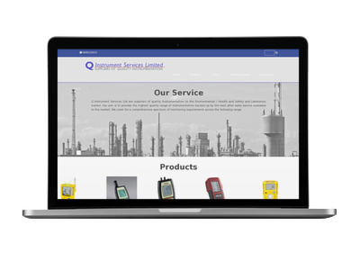
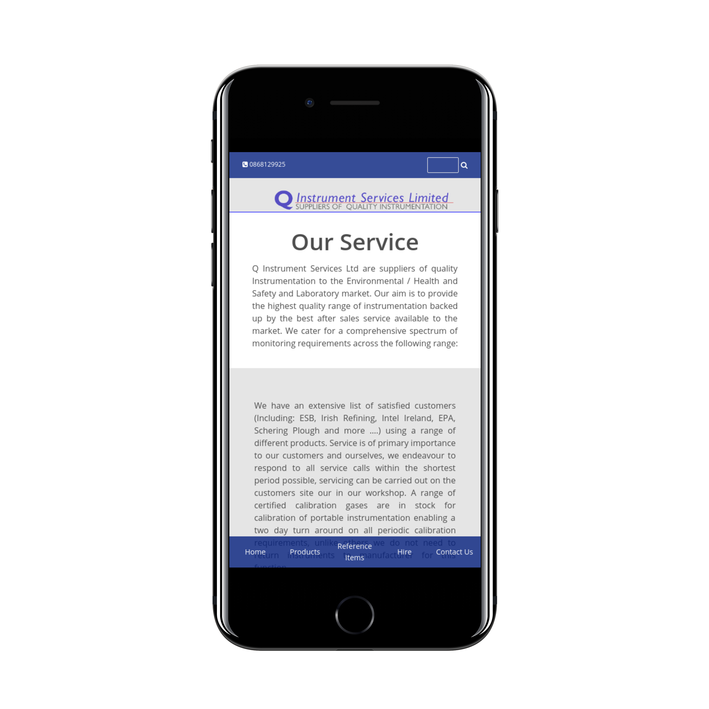

© Denis Quaid 2016
Sites & Apps
Qlimited Instrument Services - Website - Link
QLimited Instrument Services provide gas monitors for sale and hire, this website is built using Node.js with Express to connect to a MongoDB database hosted remotely. The site uses a completely custom built CMS and backend built by myself to allow the administrator to add and update products as well as files which are hosted seperately on Cloudinary.
The site is responsive for use on both mobile, desktop and laptop and uses the companies colour theme throughtout to raise awareness of the brand.
This website was built on a very limited budget in my spare time, it is hosted on Heroku and leverages Google Analytics to provide real-time usage data.
The site is responsive for use on both mobile, desktop and laptop and uses the companies colour theme throughtout to raise awareness of the brand.
This website was built on a very limited budget in my spare time, it is hosted on Heroku and leverages Google Analytics to provide real-time usage data.


Included below are projects loaded from my github page, many of these include side projects, introductions to new frameworks and applications I am actively working on.